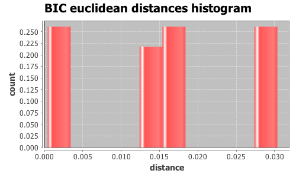
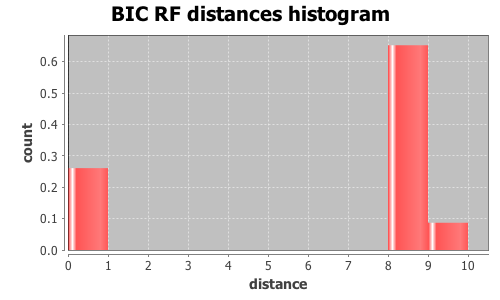

Application Meta
jModeltest 2.1
(c) 2011-onwards D. Darriba, G.L. Taboada, R. Doallo and D. Posada,(1) Department of Biochemistry, Genetics and Immunology
University of Vigo, 36310 Vigo, Spain.
(2) Department of Electronics and Systems
University of A Coruna, 15071 A Coruna, Spain.
e-mail: ddarriba@udc.es, dposada@uvigo.es
Wed Aug 26 16:13:07 EDT 2015
Mac OS X 10.10.5, arch: x86_64, bits: 64, numcores: 4
| Citation: | Darriba D, Taboada GL, Doallo R and Posada D. 2012. "jModelTest 2: more models, new heuristics and parallel computing". Nature Methods 9, 772. |
 Back to top
Back to top Settings
Arguments = -d group3/group3.txt.gene_237.phy -s 3 -i -g 4 -f -BIC -tr 7 -o group3out/g3outgene_237.txtInput Alignment: "group3/group3.txt.gene_237.phy"
NumTaxa = 17
Length = 1,637
Phyml version = 3.0
Phyml binary = PhyML_3.0_macOS_i386
Candidate models = 24
number of substitution schemes = 3
including models with equal/unequal base frequencies (+F)
including models with/without a proportion of invariable sites (+I)
including models with/without rate variation among sites (+G) (nCat = 4)
Optimized free parameters (K) = Substitution parameters + 31 branch lengths + topology
Base tree for likelihood calculations = Maximum Likelihood
Tree topology search operation = NNI
Model Optimization Results
| ID | Name | Partition | -lnL | p | fA | fC | fG | fT | ti/tv | R(a) | R(b) | R(c) | R(d) | R(e) | R(f) | p-inv | shape |
|---|---|---|---|---|---|---|---|---|---|---|---|---|---|---|---|---|---|
| 1 | JC | 000000 | 4374.0400 | 32 | - | - | - | - | - | - | - | - | - | - | - | - | - |
| 2 | JC+I | 000000 | 4345.9572 | 33 | - | - | - | - | - | - | - | - | - | - | - | 0.6140 | - |
| 3 | JC+G | 000000 | 4345.1690 | 33 | - | - | - | - | - | - | - | - | - | - | - | - | 0.3310 |
| 4 | JC+I+G | 000000 | 4344.9365 | 34 | - | - | - | - | - | - | - | - | - | - | - | 0.3190 | 0.7970 |
| 5 | F81 | 000000 | 4355.9366 | 35 | 0.2927 | 0.2734 | 0.2130 | 0.2209 | - | - | - | - | - | - | - | - | - |
| 6 | F81+I | 000000 | 4327.7757 | 36 | 0.2929 | 0.2735 | 0.2133 | 0.2203 | - | - | - | - | - | - | - | 0.6150 | - |
| 7 | F81+G | 000000 | 4326.9856 | 36 | 0.2929 | 0.2734 | 0.2133 | 0.2203 | - | - | - | - | - | - | - | - | 0.3300 |
| 8 | F81+I+G | 000000 | 4326.7541 | 37 | 0.2930 | 0.2734 | 0.2133 | 0.2203 | - | - | - | - | - | - | - | 0.3190 | 0.7940 |
| 9 | K80 | 010010 | 4267.5217 | 33 | - | - | - | - | 2.6108 | - | - | - | - | - | - | - | - |
| 10 | K80+I | 010010 | 4236.7618 | 34 | - | - | - | - | 2.8481 | - | - | - | - | - | - | 0.6300 | - |
| 11 | K80+G | 010010 | 4235.7377 | 34 | - | - | - | - | 2.8548 | - | - | - | - | - | - | - | 0.2950 |
| 12 | K80+I+G | 010010 | 4228.2121 | 35 | - | - | - | - | 3.0218 | - | - | - | - | - | - | 0.3540 | 0.7510 |
| 13 | HKY | 010010 | 4246.5737 | 36 | 0.2961 | 0.2747 | 0.2097 | 0.2196 | 2.6151 | - | - | - | - | - | - | - | - |
| 14 | HKY+I | 010010 | 4215.5651 | 37 | 0.2958 | 0.2763 | 0.2089 | 0.2190 | 2.8624 | - | - | - | - | - | - | 0.6300 | - |
| 15 | HKY+G | 010010 | 4207.3800 | 37 | 0.2972 | 0.2747 | 0.2091 | 0.2191 | 3.0200 | - | - | - | - | - | - | - | 0.2900 |
| 16 | HKY+I+G | 010010 | 4206.9543 | 38 | 0.2972 | 0.2747 | 0.2091 | 0.2190 | 3.0375 | - | - | - | - | - | - | 0.3380 | 0.7110 |
| 17 | SYM | 012345 | 4254.3284 | 37 | - | - | - | - | - | 2.0434 | 7.5607 | 0.4333 | 2.0018 | 6.8292 | 1.0000 | - | - |
| 18 | SYM+I | 012345 | 4223.6176 | 38 | - | - | - | - | - | 2.3572 | 9.0601 | 0.4155 | 2.4352 | 8.4430 | 1.0000 | 0.6270 | - |
| 19 | SYM+G | 012345 | 4216.5498 | 38 | - | - | - | - | - | 2.1552 | 9.1643 | 0.4006 | 2.2302 | 8.0483 | 1.0000 | - | 0.2970 |
| 20 | SYM+I+G | 012345 | 4216.0851 | 39 | - | - | - | - | - | 2.1775 | 9.2555 | 0.4005 | 2.2430 | 8.1400 | 1.0000 | 0.3570 | 0.7780 |
| 21 | GTR | 012345 | 4234.3908 | 40 | 0.2964 | 0.2714 | 0.2059 | 0.2263 | - | 1.5543 | 6.7265 | 0.3633 | 1.8374 | 5.9571 | 1.0000 | - | - |
| 22 | GTR+I | 012345 | 4203.5983 | 41 | 0.2976 | 0.2711 | 0.2052 | 0.2262 | - | 1.6464 | 7.7549 | 0.3285 | 2.1681 | 7.0004 | 1.0000 | 0.6260 | - |
| 23 | GTR+G | 012345 | 4196.1340 | 41 | 0.2983 | 0.2707 | 0.2045 | 0.2265 | - | 1.4926 | 7.8160 | 0.3142 | 1.9956 | 6.6569 | 1.0000 | - | 0.2980 |
| 24 | GTR+I+G | 012345 | 4195.7291 | 42 | 0.2983 | 0.2707 | 0.2046 | 0.2265 | - | 1.5021 | 7.8799 | 0.3128 | 2.0060 | 6.7182 | 1.0000 | 0.3430 | 0.7460 |
There are 3 different topologies. The following table shows the models supporting each topology and the rank according to each Information Criterion, as well as Robinson-Foulds and Euclidean distances with the tree of the best-fit model.
| ID | Models | Topology | AIC | BIC | AICc | DT | |
|---|---|---|---|---|---|---|---|
| 0 |
K80+I+G HKY+G HKY+I+G SYM+G SYM+I+G GTR+G GTR+I+G
|
RANK | - | 0 | - | - | |
| Weight | - | 0.9997 | - | - | |||
| RF | - | 0 | - | - | |||
| AVG Distance | - | 9.8316e-04 | - | - | |||
| Distance VAR | - | 4.2444e-07 | - | - | |||
| 1 |
JC JC+I JC+G JC+I+G F81 F81+I F81+G F81+I+G K80 K80+I K80+G HKY HKY+I SYM GTR
|
RANK | - | 1 | - | - | |
| Weight | - | 0.0003 | - | - | |||
| RF | - | 8 | - | - | |||
| AVG Distance | - | 2.1381e-02 | - | - | |||
| Distance VAR | - | 4.1969e-05 | - | - | |||
| 2 |
SYM+I GTR+I
|
RANK | - | 2 | - | - | |
| Weight | - | 0.0000 | - | - | |||
| RF | - | 10 | - | - | |||
| AVG Distance | - | 1.3596e-02 | - | - | |||
| Distance VAR | - | 1.8313e-08 | - | - |
BIC Selection Results
Model selected
| Model | HKY+G | ||
|---|---|---|---|
| partition | 010010 | ||
| -lnL | 4207.3800 | ||
| K | 37 | ||
| freqA | 0.2972 | R(a) | - |
| freqC | 0.2747 | R(b) | - |
| freqG | 0.2091 | R(c) | - |
| freqT | 0.2191 | R(d) | - |
| ti/tv | 3.0200 | R(e) | - |
| R(f) | - | ||
| p-inv | - | gamma | 0.2900 |
Best model tree
(((((I0076:0.00761184,I0075:0.00434535):0.00441355,I0119:0.00631547):0.00177944,(I0148:0.00754526,((((I0152:0.00501940,I0150:0.00378896):0.00087197,I0149:0.00424146):0.00236402,I0151:0.00461080):0.00158032,I0144:0.00750256):0.00063218):0.00063417):0.00066023,(((I0135:0.00277116,I0127:0.00347722):0.00122341,(I0141:0.00686749,(I0068:0.00186420,I0067:0.00487875):0.00248660):0.00097318):0.00090158,I0147:0.01073696):0.00062475):0.00686667,I0111:0.12433780,I0158:0.02196542);
Display best model tree in PhyloWidget
| Model | -lnL | K | BIC | delta | weight | cumWeight |
|---|---|---|---|---|---|---|
| HKY+G | 4207.3800 | 37 | 8688.5830 | 0.0000 | 0.9365 | 0.9365 |
| HKY+I+G | 4206.9543 | 38 | 8695.1322 | 6.5492 | 0.0354 | 0.9720 |
| GTR+G | 4196.1340 | 41 | 8695.6933 | 7.1103 | 0.0268 | 0.9987 |
| GTR+I+G | 4195.7291 | 42 | 8702.2843 | 13.7013 | 0.0010 | 0.9997 |
| HKY+I | 4215.5651 | 37 | 8704.9532 | 16.3702 | 0.0003 | 1.0000 |
| GTR+I | 4203.5983 | 41 | 8710.6219 | 22.0389 | 0.0000 | 1.0000 |
| SYM+G | 4216.5498 | 38 | 8714.3232 | 25.7402 | 0.0000 | 1.0000 |
| K80+I+G | 4228.2121 | 35 | 8715.4460 | 26.8630 | 0.0000 | 1.0000 |
| SYM+I+G | 4216.0851 | 39 | 8720.7943 | 32.2113 | 0.0000 | 1.0000 |
| K80+G | 4235.7377 | 34 | 8723.0964 | 34.5134 | 0.0000 | 1.0000 |
| K80+I | 4236.7618 | 34 | 8725.1447 | 36.5617 | 0.0000 | 1.0000 |
| SYM+I | 4223.6176 | 38 | 8728.4587 | 39.8757 | 0.0000 | 1.0000 |
| HKY | 4246.5737 | 36 | 8759.5698 | 70.9868 | 0.0000 | 1.0000 |
| GTR | 4234.3908 | 40 | 8764.8064 | 76.2234 | 0.0000 | 1.0000 |
| K80 | 4267.5217 | 33 | 8779.2639 | 90.6809 | 0.0000 | 1.0000 |
| SYM | 4254.3284 | 37 | 8782.4797 | 93.8967 | 0.0000 | 1.0000 |
| F81+G | 4326.9856 | 36 | 8920.3934 | 231.8104 | 0.0000 | 1.0000 |
| F81+I | 4327.7757 | 36 | 8921.9737 | 233.3907 | 0.0000 | 1.0000 |
| F81+I+G | 4326.7541 | 37 | 8927.3312 | 238.7482 | 0.0000 | 1.0000 |
| JC+G | 4345.1690 | 33 | 8934.5585 | 245.9755 | 0.0000 | 1.0000 |
| JC+I | 4345.9572 | 33 | 8936.1349 | 247.5519 | 0.0000 | 1.0000 |
| JC+I+G | 4344.9365 | 34 | 8941.4941 | 252.9111 | 0.0000 | 1.0000 |
| F81 | 4355.9366 | 35 | 8970.8949 | 282.3119 | 0.0000 | 1.0000 |
| JC | 4374.0400 | 32 | 8984.8999 | 296.3169 | 0.0000 | 1.0000 |
| -lnL: | negative log likelihod |
| K: | number of estimated parameters |
| BIC: | Bayesian Information Criterion |
| delta: | BIC difference |
| weight: | BIC weight |
| cumWeight: | cumulative BIC weight |
Confidence interval
There are 24 models in the 100.00% confidence interval:
HKY+G HKY+I+G GTR+G GTR+I+G HKY+I GTR+I SYM+G K80+I+G SYM+I+G K80+G K80+I SYM+I HKY GTR K80 SYM F81+G F81+I F81+I+G JC+G JC+I JC+I+G F81 JC

Euclidean distances histogram from each model optimized tree to HKY+G tree.
Euclidean distances histogram from each model optimized tree to HKY+G tree.

Robinson-Foulds distances histogram from the different topologies to HKY+G topology.
Robinson-Foulds distances histogram from the different topologies to HKY+G topology.